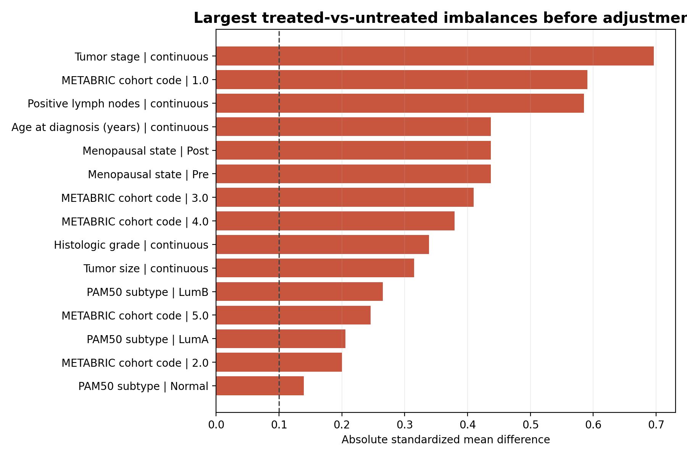
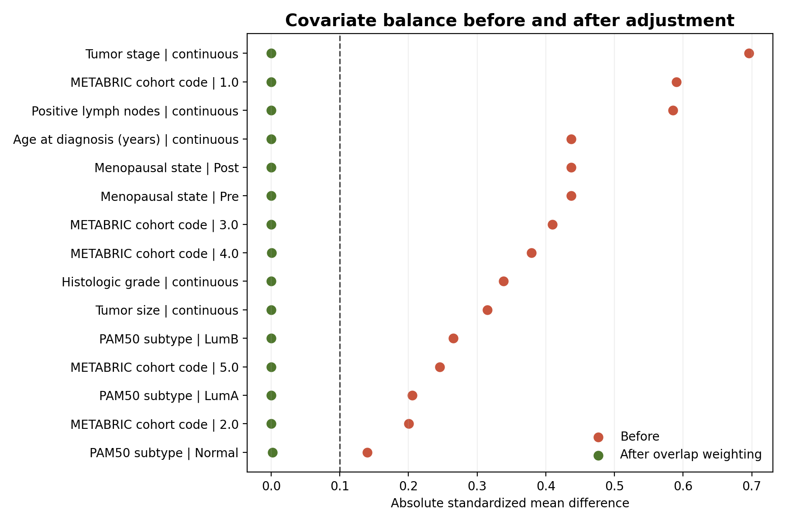

BRCAPath-Rx · Confounding Demo · Stage 2
Treated and untreated patients are already different before treatment starts.
A naive comparison can mislead us. This demo shows why — and how we try to correct it.
The Umbrella Problem
People with umbrellas get wet more often than people without — but umbrellas don't cause rain. They're a response to it. Treated patients are similar: sicker patients are more likely to receive treatment, making treatment look harmful in a naive comparison.
What Confounding Means
A "confounder" is a variable that affects both who gets treated and what happens to them. Without accounting for it, treatment comparisons pick up background risk differences — not just the treatment effect.
Core Claim
What this entire demo is about
Problem
Treated and untreated groups differ at baseline. Direct comparison is misleading.
Adjustment
Statistical weighting tries to balance measured differences so the comparison is fairer.
Honest Claim
We reduce measured confounding — but unmeasured factors may remain. We don't prove causation.
The Naive Comparison Problem
Toggle the risk factors to see how group differences distort the result.
Add imbalances
✓
Treated group is older
Avg 65 vs 59 years
✓
Treated has later-stage cancer
Stage 1.9 vs 1.3 average
✓
Treated has more lymph nodes
2.3 positive nodes vs 0.4
These are REAL imbalances
Found in the actual METABRIC ER-positive cohort before any adjustment.
Group comparison
Treated group
Age65 yrs ↑
Tumor stage1.9 ↑
Lymph nodes2.3 ↑
5-yr mortality~59%
Untreated group
Age59 yrs
Tumor stage1.3
Lymph nodes0.4
5-yr mortality~57%
Naive hazard ratio
1.50
Suggests treatment is harmful — but is it?
⚠ Misleading conclusion
Treated group appears to have worse survival. But they started sicker.
The comparison is apples to oranges. We need adjustment first.
Three Breast-Cancer Cases
One real completed case. Two future candidates — clearly labeled as such.
✓ Case A — Hormone Therapy
Real · Done
◷ Case B — Chemotherapy
Future
◷ Case C — Radiotherapy
Future
✓ Completed Analysis
ER-positive METABRIC · n = 1,506 · Outcome: Overall Survival
1,506Patients
1,079Treated
427 Untreated
1.50Naive HR
1.00Adjusted HR
18 → 0Imbalances Fixed
Select view
1 · Baseline Imbalance
2 · Naive Comparison
3 · After Adjustment
4 · Adjusted Survival

📊 fig_balance_before.png
Copy from 03-results/ to assets/
Copy from 03-results/ to assets/
Covariate balance before adjustment. 18 variables show |SMD| > 0.10.
Largest imbalances
What this means
Treated patients had more advanced cancer at baseline. Any survival comparison at this stage mixes treatment effects with pre-existing risk differences.

📊 fig_naive_km.png
Copy from 03-results/ to assets/
Copy from 03-results/ to assets/
Naive Kaplan-Meier curves. Treated group appears to have worse survival — a confounded result.
Naive result
HR = 1.50
95% CI: 1.29 – 1.74 | p < 0.0001
Naive conclusion (misleading)
"Hormone therapy appears to cause worse survival."
Better interpretation
The treated group was older, higher-stage, and had more lymph node involvement at baseline. The naive HR reflects those pre-existing differences — not treatment effect alone.

📊 fig_balance_after.png
Copy from 03-results/ to assets/
Copy from 03-results/ to assets/
After overlap weighting: all 18 previously imbalanced covariates are now balanced. Max |SMD| dropped from 0.696 to 0.002.
Balance improvement
18Imbalanced before
0 Imbalanced after
What changed
Overlap weighting rebalanced all 18 measured confounders. Groups are now comparable on all observed baseline characteristics.

📊 fig_adjusted_survival.png
Copy from 03-results/ to assets/
Copy from 03-results/ to assets/
Overlap-weighted survival curves. After adjustment, treated and untreated groups show nearly identical trajectories.
Adjusted result
HR = 1.00
95% CI: 0.84 – 1.19 | p = 0.961
What changed
HR dropped from 1.50 → 1.00. The apparent "harm" disappears entirely after balancing for measured confounders. The naive signal was entirely driven by baseline differences.
Important caution
This is observational data. Unmeasured confounders (comorbidities, adherence, treatment era) may still bias the estimate. We reduced measured confounding — we did not prove causation.
◷ Future Candidate Case
Not yet analyzed · Candidate for next stage
Chemotherapy YES vs NO
In a higher-risk breast cancer subgroup (e.g., triple-negative or high-grade), does chemotherapy relate to survival after adjustment?
Why confounding is expected
Chemotherapy is preferentially given to higher-risk patients — who already have a worse prognosis regardless of treatment. A naive comparison would make chemo look harmful or ineffective.
Key confounders to adjust for
Tumor stage
Lymph node status
Histologic grade
PAM50 subtype
Age
ER / HER2 status
Treatment selection overlap (initial screen)
32.8%
Overlap fraction — strong treatment sorting in full cohort
Low overlap means most patients clearly belong to one arm. Careful subgroup restriction (patients where chemo decision was genuinely uncertain) is needed before analysis.
Status: Analysis not yet run
No hazard ratios, balance statistics, or figures exist yet for this case.
Conceptual illustration (not real results)
Naive
HR ~1.8?
HR ~1.8?
→
Adjusted
HR = ??
HR = ??
Illustration only · not real data
◷ Future Candidate Case
Not yet analyzed · Candidate for next stage
Radiotherapy YES vs NO
In a node-positive or local-control-relevant subgroup, does radiotherapy relate to survival after adjusting for surgery type and local disease characteristics?
Why confounding is expected
Radiotherapy use is tightly linked to surgery type (lumpectomy vs mastectomy) and local disease burden. Patients receiving radiotherapy may differ systematically in ways that independently affect survival.
Key confounders to adjust for
Surgery type
Node status
Tumor size
Local recurrence risk
Age
Histologic grade
Treatment selection overlap (initial screen)
98.1%
Overlap fraction — very high, but entangled with surgery type
High overlap is promising, but the treatment decision is structurally determined by surgery choice. This creates a form of confounding that needs surgery-type stratification before analysis.
Status: Analysis not yet run
No hazard ratios, balance statistics, or figures exist yet for this case.
Key question to resolve first
Can we identify a subgroup where the radiotherapy decision was genuinely uncertain — e.g., close-margin lumpectomy patients with borderline nodal involvement?
Illustration only · not real data
How Adjustment Helps
Two approaches to making groups more comparable — in plain language.
Overlap Weighting
Propensity Score Matching
Used in this prototype
Overlap Weighting
Each patient gets a weight based on how uncertain their treatment assignment was. Patients who could plausibly have gone either way contribute most to the comparison.
What it does
Reweights the population so treated and untreated groups look similar on all measured confounders. Focuses on the clinical equipoise region.
What it fixes
Simultaneously balances all measured confounders. No patients are excluded — all contribute with adjusted weights. Handles extreme propensity scores well.
What it cannot guarantee
Cannot balance variables we didn't measure. Unmeasured confounders (comorbidities, adherence, treatment era) may still bias results. This is not a randomized trial.
Results in this prototype
Max imbalance before
|SMD| = 0.696
Tumor stage
Max imbalance after
|SMD| = 0.002
Same variable, post-weighting
Covariates above threshold
18 → 0
Before → after weighting
Effective sample size
~918
570 treated + 348 untreated
Alternative approach
Propensity Score Matching
Each treated patient is paired with an untreated patient who looks similar based on their estimated treatment probability. The comparison uses only matched pairs.
What it does
Creates a matched sample where each treated patient has a "similar" untreated counterpart. Intuitive to explain: "we compared like with like."
What it fixes
Creates covariate balance within matched pairs. Easier to communicate to non-statisticians. Well-established methodology.
What it cannot guarantee
Discards unmatched patients (loses data). Sensitive to caliper and ratio choices. Still cannot adjust for unmeasured confounders.
OW vs PSM comparison
Sample lossOW: none
InterpretabilityPSM: simpler
Balance qualityOW: better
Extreme PS handlingOW: more robust
Why we used OW
20% of patients had extreme propensity scores. PSM would have excluded many of them, reducing power and generalizability.
What This Means for the AI Model
Confounding affects the quality of the signal the model learns from.
👤
Patient Profile
Age, stage, subtype, nodes
→
⚖️
Adjusted Effect Modeling
Confounding reduced first
→
💊
Compare Treatments
Hormone · Chemo · Radio
→
🎯
Rank Candidates
For this patient profile
Without Adjustment
With Adjustment
Without adjustment — risky signals
Problem 1
AI trains on confounded survival data. Sicker patients got treated → model may learn "treatment = worse outcome."
Problem 2
False patterns get embedded. Model recommends based on historical treatment patterns, not on causal effects.
Problem 3
Bias propagates. A technically accurate model on training data can be systematically wrong about treatment effects.
With adjustment — cleaner signals
Improvement 1
AI trains on confounding-reduced estimates. Treatment effects reflect the comparison of more similar patients.
Improvement 2
Cleaner treatment signal. Recommendations are informed by adjusted effects, not by historical treatment selection patterns.
Still future work
Multi-treatment recommendation combining hormone therapy, chemo, and radiotherapy is the next stage. Not yet implemented.
What We Studied Now vs What Comes Next
One completed prototype. Two clear next candidates.
✓
Studied Now
Stage 2 prototype — completed
Hormone Therapy · ER-positive METABRIC
Among ER-positive METABRIC patients, does hormone therapy (YES vs NO) relate to overall survival after adjustment?
✓n = 1,506 patients
✓Naive HR 1.50 → Adjusted HR 1.00
✓18 imbalances resolved via overlap weighting
✓5 publication-quality figures produced
✓Prototype status: ready for review